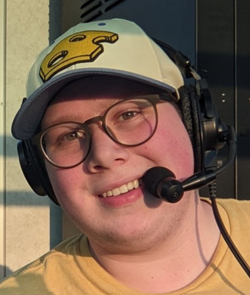

About Us
We are a brand new podcast created for sports fan. It is currently being hosted by Justin Narveson who is going into his 5th year at the University of Wisconsin-Eau Claire. He has been working at the on campus TV station TV10 for the last 4 years as a commentator for athletic events as well as being Production Director for the last 2 years. Justin has grown up with sports all around him, and has always had a passion for athletics. A quick fun fact about Justin is that a distant cousin of his, Chris Narveson, is a former MLB pitcher and even pitched for his favorite team the Milwaukee Brewers.
